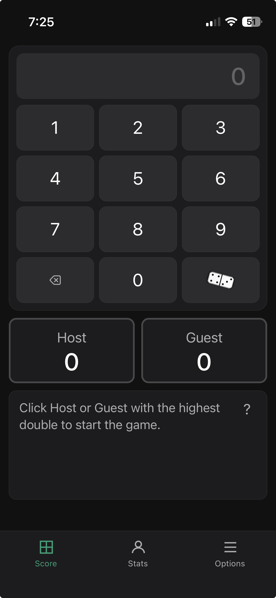
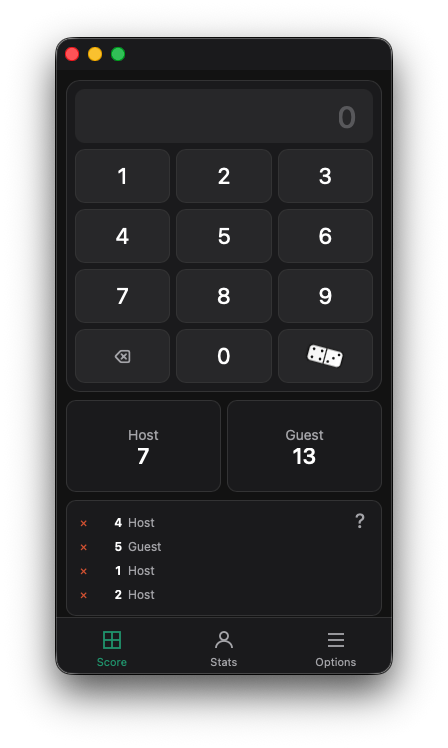
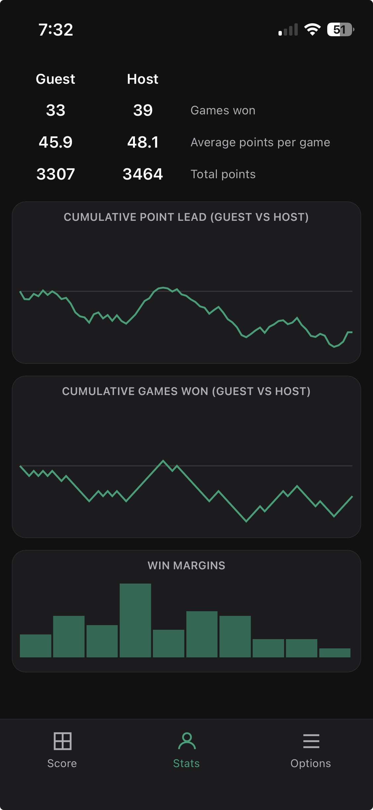
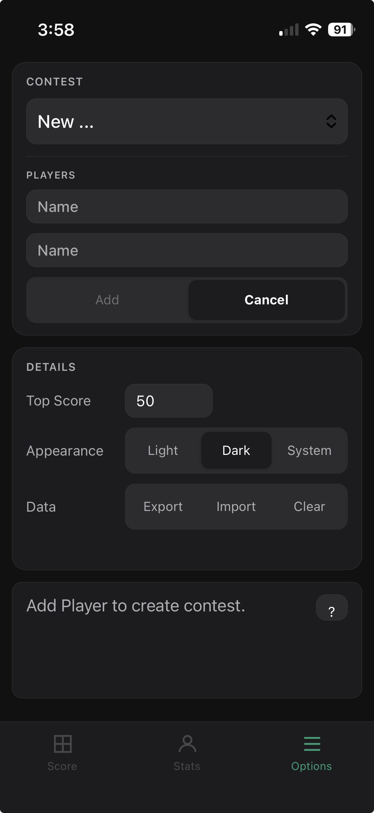
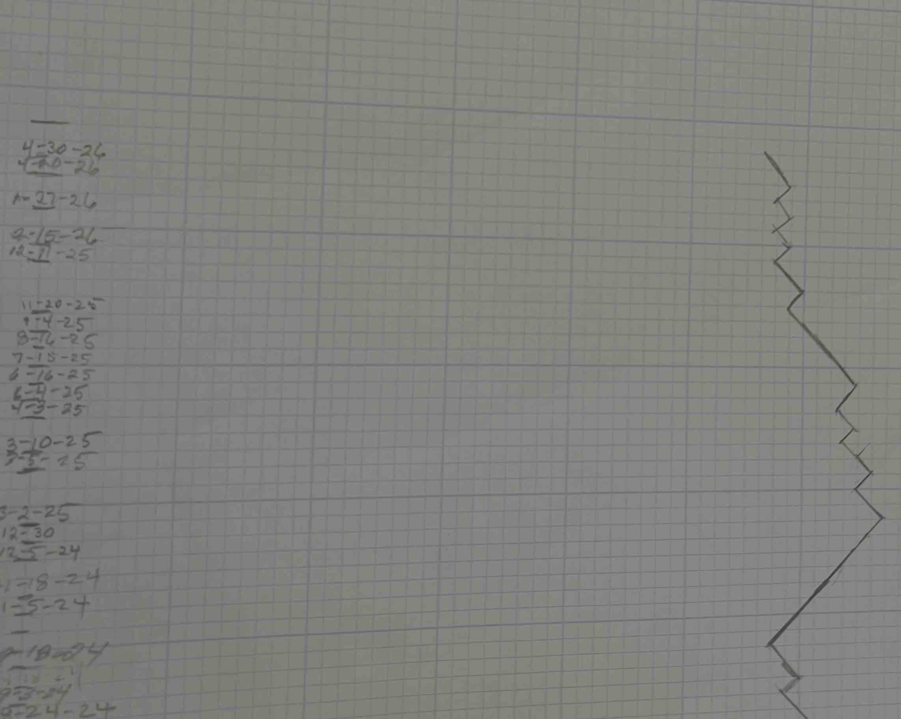
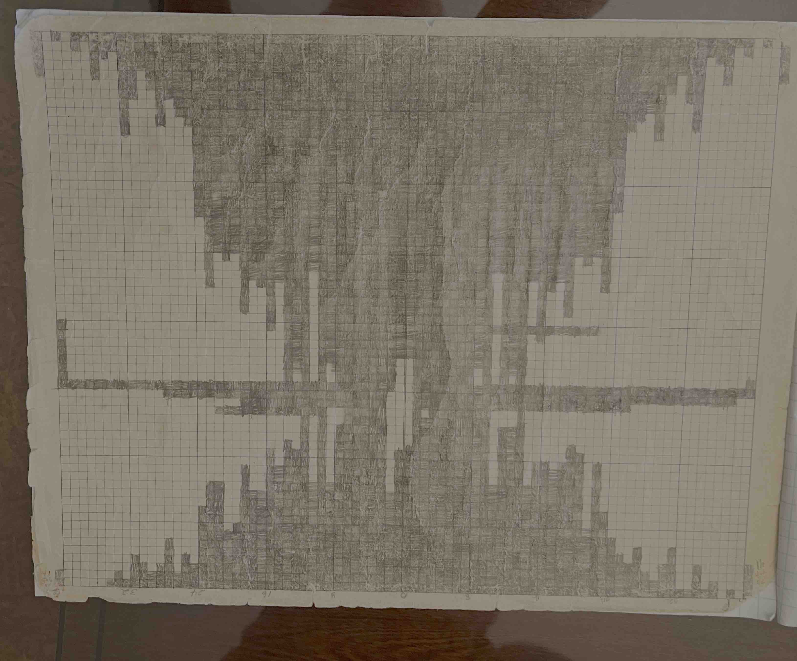
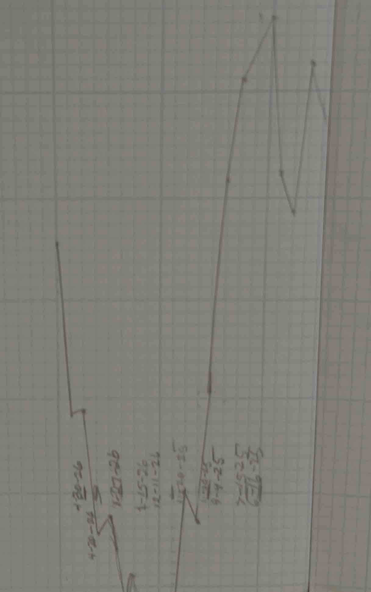
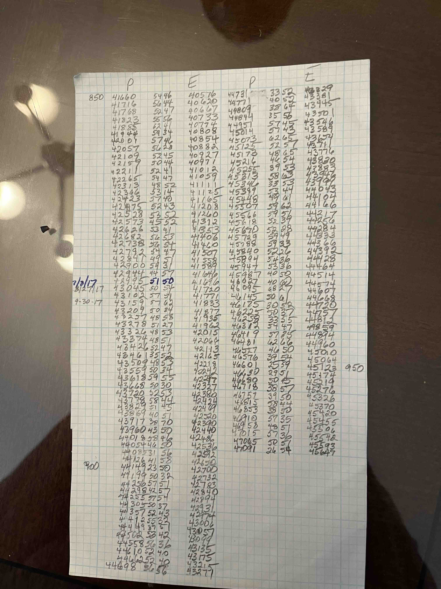

A lightweight browser-based scorekeeper for domino games. Record games quickly, compare player performance over time, and explore trends with simple, mobile-friendly analytics.
Visit:
https://evanvliet.github.io/dominoes
You will see the main scoring tab, note status advising to click on highest double. This is for play where who goes first alternates on each hand, the one with the highest double starts.

After selecting the starting player, add scores by entering a number and clicking on the scorer. After some play, the status lists recent scores. Click the red X to delete a score, and possibly replace by adding another score.

When a player dominoes (plays all their tiles), the hand ends. First, enter any score from that play, then tap the domino tile below the 9 to mark the hand complete. A highlit border indicates who goes first on the next hand and the status area gives hand totals. After a domino, the player with the most points above the top score wins. The status area shows the winner. Tap the player with the highest double to begin the next game.
The middle tab is STATS; it has three sections: numric data, graphs, and histograms. Click on the first to cycle through points, averages, and games. The middle toggles between graphs of point and game scores. The third has three histograms, click to see winning margins for each player, and another for both.
Screenshots:
| Statistics | Options |
|---|---|
 |
 |
Last is Options: set up separate contests labeled by player names. Click on the CONTEST dropdown and select New... to set the players. You can also configure top score, dark mode, and import/export of data.
Browsers can install the app to your home screen for a more native experience:
The options tab includes Data buttons for Export, Import, and Clear.
Export pastes current contest as plain ascii into the clipboard:
Host | Guest
5/31 09:33 40 50
5/31 09:32 51 45
First player names, followed by date, time and player scores for each completed game. You have to paste the clipboard data into a mail message or web document to save it.
Long time friend Peter and I have played dominoes for years. We kept scores on scraps of paper, and graphs on sheets of graph paper taped together. Here's a gallery of those:
| Games / Points | Histogram / Scores |
|---|---|
 |
 . |
 |
 |
We would scheme on an alternative to pencil-and-paper scorekeeping: a fast, browser-based alternative that preserves game history and reveals who is really winning over time. It would:
The arrival of AI coding tools was too tempting, and this is the result.
See prompts for the initial development logs. And info has AI genearted feature details.